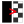

QGIS Geoscience Plugin 1.0
Roland Hill
Your name here! - Please contribute and make this a better, more comprehensive geoscience tool.
Geoscience has the following tools available from the Geoscience menu or accessible from the Geoscience toolbar.
- Drill Hole Tools: Desurvey holes, project drill hole traces to surface with and without down hole data, generate & display sections.
 Vector Tools: Reverse the direction of lines.
Vector Tools: Reverse the direction of lines.-  Raster Tools: Transparent black or white pixels.
Contents
Tools to display drill holes, down hole data and sections in QGIS. This includes de-surveying the holes using collar azimuth and dip and/or survey data. Prior to using Drill Tools you need to open the collar, survey (optional) and down hole data (optional) tables in QGIS. You can use any format supported by QGIS including shapefiles, MapInfo Tab files or CSV files (Note: Geoscience doesn't support database layers yet. If your data is in a database, first export your layers as Geopackage, Shapefile etc). To open data using CSV, use the existing Delimited Text tool  .
.
Drill Tools will only work with projected coordinate systems (ie not latitude and longitude)
Geoscience will create new layers with names based on the original file names. It's suggested to give your original files short, simple names (eg. Collar.shp, Assay.csv etc). Once Geoscience has created a file name then you shouldn't change it because Geoscience might not be able to identify the file again.
The workflow to display the surface projection of drill traces follows. You will also need to do this if you want to display sections.
- Open the Collar layer. If using the Delimited Text tool in QGIS, select Point Geometry and the appropriate columns for Easting and Northing, followed by the Coordinate Reference System.
- (Optional) Open the Survey layer. If using the Delimited Text tool in QGIS, select No Geometry to just import the data columns.
- (Optional) Open the Down hole data layers. You can use multiple layers (eg. lithology and assay) and if you are using the Delimited Text tool in QGIS, select No Geometry to just import the data columns.
- Choose Geoscience -> Drilling -> Desurvey Data or click the button on the toolbar. Select the appropriate fields. Note that all fields will be guessed by Geoscience if sensible names have been used. Choose the Desurvey Length. Drill holes will be reconstructed using straight line segments of this length. Click OK and a new layer is created and loaded in QGIS. You can now see the surface projection of drill holes.
- Choose Geoscience -> Drilling -> Downhole Data or click the button on the toolbar. Choose the source Downhole Data layer and the appropriate attribute fields. Again, these are chosen automatically if sensible names are used. Check all the attribute fields that you want to include in the downhole data layer to be created. You also need to provide a brief descriptive name to be appended to the layer name (a default is provided).
- The downhole trace layer is created and loaded into QGIS with each row containing one line segment for each interval from the source. You then need to Symbolise the new layer to display the attributes as you desire.
Sections
Sections are generated by defining start and end coordinates, a width and which layers to include in the section. Sections will be transformed to a new coordinate system based on distance along the section from the start point and the real elevation as calculated in the Desurvey stage. This means that your sections are displayed on the same map canvas as the rest of your data. Usually this will be in a different part of space to your normal, plan-based spatial data and won't be a problem. If your regular data uses coordinates near 0E, 0N, then you might want to move it all to a single group in the Layer Tree so that you can switch it on and off easily. Sections will be placed in their own group automatically.
Geoscience will store all the metadata required to recreate a section in your QGIS Project file. Generated section layers are only Memory Layers and will be lost when QGIS is closed, however they can easily be regenerated when you open your project again. Similarly, you can remove sections from the Layer Tree and then regenerate them later. The only way to delete sections permanently is via the Section Manager.
The Section Manager displays all sections in the box on the left. You can double click sections in the box to display them. Also, the Section layer tree group is set as mutually exclusive, so you can switch between sections by clicking their groups on and off.
You can Recreate or Delete multiple sections by selecting their check boxes first. When you recreate a section, Geoscience will replace any existing empty Memory Layers already in the section's group in the layer tree.
Geoscience will create a top level Group called Sections. All sections you create will be placed under this in their own Group so that you can switch all the section layers on and off together.
Sections are normal QGIS layers. You can use any of the Symbology, labelling tools etc as normal. You can also create a Layout to produced scaled and annotated plots.
Geoscience will generate three grids and a border with every section. These are placed in a Decorations group so that they can be toggled on and off together. The three grids show where lines of Easting, Northing and Elevation cross the section line. If your section is close to west-east or south-north then one of the grids will be turned off by default. You can turn any of the three grids or border on or off independently.
To generate and display sections.
- When a section is created, Geoscience copies the style from your down hole data layers to the new section. You should therefore make sure that you are happy with your down hole data styles before generating sections. Note that you can change the down hole data style later, then regenerate the sections to update the section styles if required, but better to get it right the first time.
- Open the Section Manager by choosing Geoscience -> Drilling -> Section Manager or click the button on the toolbar.
- Type in your desired section width.
- You have three options to create a section:
- Map Canvas - Use the mouse to draw a section line on the map canvas.
- West-East - Type in the Northing plus start and end Easting for the section.
- South-North - Type in the Easting plus start and end Northing for the section.
- If Map Canvas is chosen, you then click and drag a section to define the end points. Geoscience will display a moving box of defined section width to assist you. Your section is defined when you release the mouse button.
- Once a Map Canvas section is defined, or when you choose to define an orthogonal section, a dialog will ask you to select which vector and raster layers you want to include and choose a name for the section. Check the boxes next to the desired levels then click OK. Note that only vector layers with 3D coordinates and single band raster layers are displayed.
- It may take some time to generate the section depending on how many drill holes you have. Once completer, a new drill hole will be added to the Section Manager, a new group containing your section is added to the Layer Tree and the Map Canvas will zoom to your new section. (see Sections for more information)
Section Interpretation
You can use QGIS' standard tools to interpret on sections. Create a new vector layer and place it in under the section group with the rest of the layers. This way it will be turned on and off with all the automatically generated layers. When you save your QGIS Project, your interpretation layers will be saved with it. When you re-open your Project and recreate your sections, the Geoscience layers will replace the empty place-holders and your section will be returned to the way you left it.
Don't delete your section in the Section Manager if you have custom interpretation layers. If you do, then you will need to make the section again and move the features from your interpretation layer to match the section.
- Reverses the order of all the nodes in the selected line features, in effect reversing the direction of the line. This is necessary when using asymmetric line styles such as reverse and normal fault symbols. Note that the layer must be editable before using the tool.
- Sets the transparent colour to white for all the raster images selected in the project tree. To use, first select all the rasters you wish to process using control and shift left clicks, then choose this menu entry or toolbar button. Ideal for image sets such as EM channels or hyperspectral images.
- Sets the transparent colour to black for all the raster images selected in the project tree. To use, first select all the rasters you wish to process using control and shift left clicks, then choose this menu entry or toolbar button. Ideal for image sets such as EM channels or hyperspectral images.
What's Next?
- Convert to use drill hole database (needed for more complex functions)
- Better bad data handling & reporting
- Downhole graphs
- Easy dip symbol display
© Roland Hill 2018
Released under GPL license.